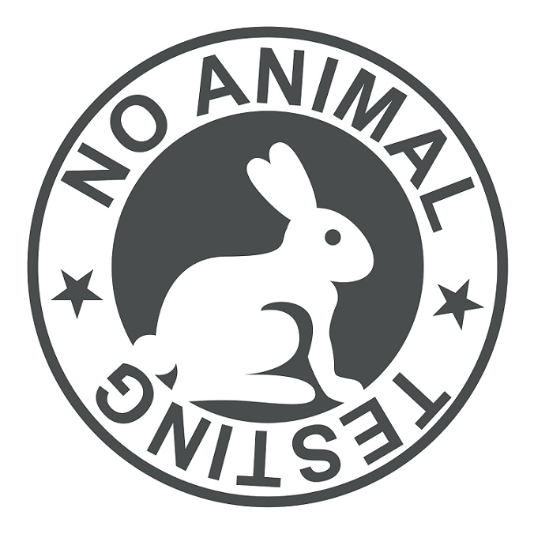
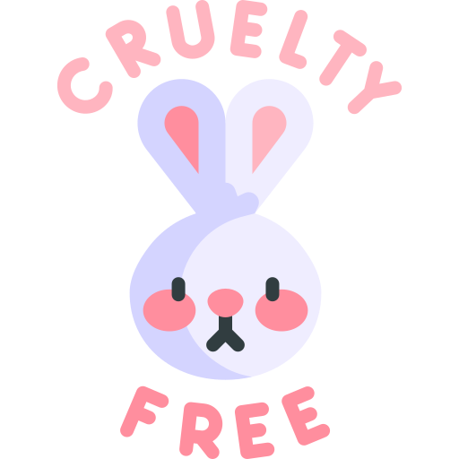
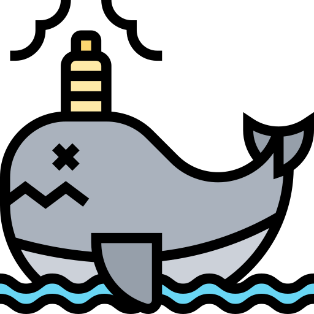

Crueldad Animal
Crueldad Animal
Por que esto podria afectarnos tambien a nosotros
04/11/2021
Caza ilegal: La caza ilegal es DEMASIADO importante detenerla debido a que el mundo esta mejoranndo en contaminación no sirve de nada tener un mundo sano si las especies que nos ayudan a sobrevivir mueren. Creas o no este tema se relaciona con el tema 1 el cual es la contaminacion, no tanto con el clima pero si con las empresas, empresas que crean productos de bellesa, cuidado personal y cosas de cosmeticos pueden llegar a usar animales para probar sus productos, acto el cual demuestra la crueldad y desesperacion de las empresas por conseguir exito y dinero, afortunadamente estas empresas que usan a animales para pruebas han sido expuestas e incluso demandadas y cerradas, pero muchas empresas tienen certificado de que no usan a animales para pruebas
Ejemplos: Personas que cazan de manera ilegal: Personas que matan animales en peligro de extinción, Personas que no tienen el certificado de permiso para cazas ciertos animales en ciertas sonas
Circos: Los circos son un medio de entrewtenimiento muy pero muy famoso, pero la popularidad que ganan hacen que los dueños piensen que tienen el poder de hacer lo que quieran, cosa que no lo tienen, creen que esta bien usar a animales por simple entretenimiento del ser humano, y solo lo hacen por dinero, dinero el cual ganan mediante el maltrato y privamiento de los animales, esto es muy grave, entonces, si piensas en ir al circo, por favor, comprueba que no usen animales
Empresas de belleza: Hay empresas de belleza que usan animales para la creacion y experimentacion de productos, productos los cuales se venden de manera normal en los supermercados, famacias y tiendas locales sin el minimo problema, ya que la gente no tiene idea de lo cruel e inhumano que es el proceso, afortunadamente las empresas empesaron ausar etiquetas certificadas las cuales son otorgadas al comprobar que sus productos no se prueban en animales, estas tienen un conejo y el texto "cruelty free"

Lista de marcas mas famosas que experimentan con animales
- Avon
- Burberry
- Chanel
- Dior
- Johnson & Johnson
- MAC
- Ponds
- Sephora
- Vaseline
- Yves Saint Laurent
Maltrato animal
03/03/22
Explicaciones del maltrato
Investigacion
03/03/22
Explicaciones del maltrato
De este tema hay muchos datos y pruebas de como la crueldad crece y crece, y como la humanidad ya no parece humana, de como ya no tenemos sentimientos. ¿Por qué es importante evitar el maltrato animal? Los animales son constantemente maltratados, vulnerando de esta forma su vida, ya que se lesiona su integridad física y psicológica; en otras palabras, su salud; por personas que no entienden que aquéllos son capaces de sentir el mismo dolor y sufrimiento que un ser humano. Naciones Unidas advierte de que el 22% de las razas está en peligro El Objetivo de Desarrollo Sostenible número 15 de Naciones Unidas persigue la protección de la vida de ecosistemas terrestres. Entre sus objetivos está acabar para 2030 con la caza furtiva y el tráfico de especies protegidas. Según el organismo internacional, de las 8.300 razas de animales conocidas, el 8% está extinto y el 22% se encuentra en peligro de extinción. En España el maltrato animal se considera un delito medioambiental y está tipificado como tal en el código penal. Los últimos datos del ministerio fiscal recogen que en 2019 se iniciaron 1.090 procedimientos judiciales por maltrato de animales domésticos, de los que 293 tuvieron sentencia condenatoria. El Ejecutivo modificará el Código Penal para “garantizar el bienestar animal” Por su parte, el servicio de protección de la naturaleza de la Guardia Civil (Seprona) confirma que en 2020 “los delitos que más aumentaron fueron los relacionados con el maltrato animal, la caza y los relativos a la protección sobre la flora y la fauna”. En total, realizaron 10.459 denuncias con animales de compañía y 8.427 relacionadas con la sanidad animal. Denuncias sin efecto Este año, uno de los casos que más repercusión ha tenido desde el punto de vista social es el del laboratorio de Vivotecnia, ubicado en Madrid, donde la Fiscalía de Medio Ambiente ha abierto diligencias. “Hay más denuncias ahora, pero no se convierten en un castigo real”, comenta Rubén Pérez, portavoz de la Fundación Franz Weber. “Hay 17 normativas diferentes y un mismo delito puede suponer una sanción de 150.000 euros en Aragón y 30.000 en Galicia. Además, el afectado puede declararse insolvente”, añade. CIFRA 18.886 denuncias interpuso el Seprona en 2020. Del total de los delitos, el 55% tuvo que ver con animales de compañía, y el resto estuvo relacionado con la sanidad animal. El maltrato animal puede suponer dos años de prisión, pero es muy difícil que se cumplan sin tener antecedentes. “Es necesario una ley marco a nivel estatal, con unos mínimos comunes a todos las comunidades autónomas”, opina Rubén Pérez. “Portugal ha reconocido en el Código Civil que los animales no son cosas sino “seres sensibles”, e incluso tienen un presupuesto más amplio en las Administraciones públicas en su defensa que debería aplicarse en Europa”, agrega Pérez.Fin de mi blog :)